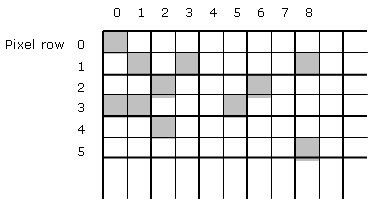
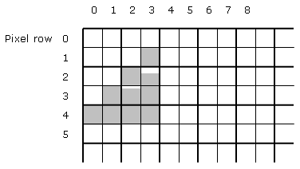

The pixel shader is the part of the Xbox GPU pipeline that does per-pixel shading in the form of texture address op, register combiner, and final combiner processing. The pixel shader takes as per-pixel input both constants and vertex-shader-produced interpolants such as strq and diffuse color, and emits per-pixel ARGB fragment values for blending into the frame buffer. The functionality of the pixel shader and its relationship to the rest of the GPU pipeline will be discussed in detail in a future white paper.
For the purposes of this paper, pixel shader pipeline will refer to the circuitry that performs the above-described processing for a single pixel. By this definition, the Xbox GPU contains four complete pixel shader pipelines, which work in parallel. At any given time, all pixel shader pipelines are configured to process the same texture address op and register combiner operations, but each does so for a different pixel. Each pixel shader pipeline is capable of processing at a maximum rate of one pixel per clock (this rate is supported with up to two 1D or 2D textures or cubemaps; performance is anywhere from two to ten times slower with more texture ops or with different ones, such as ones involving dot products). Thus, given the 250-MHz GPU clock, the pixel shader can process up to 1 Gpix/s.
Higher effective throughput can result from circuitry that rejects many occluded pixels before they ever make it to the pixel shader, and also from multisampling, which causes the output of each pixel shader pipeline to be written to 2 or 4 frame buffer subsamples. However, 1 Gpix/s is the maximum rate at which visible pixels can actually be processed. As with all maximum specified rates, this rate will be approached but not achieved in actual practice. One reason is that there will inevitably be times at which the pixel shader has to wait, either for rasterization data to come down to the pixel shader from the vertex and triangle processors, or for memory bandwidth for accessing the frame and z buffers to become available so that the result can be stored. Another reason is that the four pixel shader pipelines can only work in parallel under certain circumstances, as discussed next.
First, on any one clock, the four pixel shader pipelines can only work on pixels belonging to a single triangle. This means that if you were to draw, say, four 1-pixel triangles in a row, it would take a minimum of 4 clocks, and three of the pixel shader pipelines would remain idle during each clock, unable to work in parallel with the one active pixel shader pipeline because there are no other pixels to work on in the current triangle. Consequently, the pixel shader fill rate for very small triangles can range as low as 250 Mpix/s.
There is a second restriction that similarly has the greatest impact on small triangles. Before explaining the restriction, we first have to define a quad: a 2x2 block of pixels, starting at even row and column addresses. Consider the following figure of the portion of the frame buffer controlling the upper-left corner of the screen:

Pixels (0,0), (0,1), (1,0), and (1,1) together constitute a quad. Pixels (4,6), (4,7), (5,6), and (5,7) constitute another quad.
The restriction is that the four pixel shader pipelines can draw to only one quad on any given clock. No matter whether 1, 2, 3, or 4 pixels of a given quad are covered by a triangle, that quad will tie up all four pixel shader pipelines while it's being drawn. For example, consider the following triangle:

The triangle draws pixels in five quads; therefore (assuming that there are no more than two textures or two register combiners enabled), it will take 5 clocks to get through the pixel shader. Only when drawing the quad containing (2,2), (2,3), (3,2), and (3,3) will all four pixel shader pipelines be in action at once. In the clock during which the quad containing (1,3) is drawn, only one pixel shader pipeline will be active; likewise for (3,1). In all, there are 10 pixels in the triangle, so the effective pixel shader fill rate for this triangle will be 2 pixels/clock, or 500 Mpix/s, rather than the maximum 1 Gpix/s of which the pixel shader is capable under ideal circumstances.
Now that we understand them, the two pixel-shader-pipeline parallelism restrictions can be rolled into a single sentence: The four pixel shader pipelines can draw in parallel only to a single quad of a single triangle.
Obviously, the effects of the pixel-shader-pipeline parallelism restrictions vary quite a bit with triangle placement and size. The impact decreases rapidly with size, which is important because smaller triangles tend to be setup-bound, while larger triangles tend to be fill-bound—and it is on larger triangles that the fill rate of the Xbox GPU approaches 1 Gpix/s. Thus, although the restrictions on pixel-shader-pipeline parallelism do reduce real-world fill rate somewhat, the impact should be somewhere between nonexistent and small when the pixel shader is configured for 1-clock operation (no more than two texture address ops and no more than two register combiners enabled).
Just so this doesn't sound like hand-waving, let's take a minute to explain why fill rate is not typically a limiting factor for small triangles, at least in fast pixel-shader configurations. (The following discussion assumes a 1-cycle/pixel pixel-shader configuration.)
First, consider that triangles that contain no pixels at all—of which there are typically quite a few when drawing small triangles—are rejected before they ever get to the pixel shader. Also, rendering speed for small triangles tends to be dominated by vertex- and triangle-level work, not fill. Triangle setup takes 2 cycles. Vertex setup usually takes longer than 2 cycles, potentially much longer depending on the sophistication of hardware lighting or vertex programming. Somewhere between half a vertex and three vertices need to be processed per triangle, so setup time per triangle will be somewhere between 2 and dozens of cycles.
Even 2 cycles/triangle (achievable only with most rendering capabilities turned off and with near-ideal vertex caching) is long enough to allow the pixel shader pipelines to process a triangle between 2 and 6 pixels in size, depending on how the triangle is quad-aligned. With more realistic features selected, the pixel shader pipelines can handle considerably larger triangles. For example, with one infinite light and two textures enabled, T&L will consume 6 cycles per triangle with okay-but-not-ideal vertex sharing (approximately one vertex processed per triangle). 6 cycles is enough time to draw 6 quads, covering in the neighborhood of 9-12 pixels. (Note an interesting effect: as triangles get larger, most quads unavoidably have at least 2 pixels, and with non-extreme height/width ratios, an increasing number of quads have 3 or 4 pixels, so larger triangles can't help getting pretty good pixel-shader-pipeline parallelism.)
With more and/or more expensive hardware lighting (such as local lights), or with poor vertex sharing, the pixel-shader-pipeline parallelism restrictions become less and less likely to be a bottleneck. Consider, for example, the case of no vertex sharing at all—three vertices processed per triangle, as in the case of dynamically-generated terrain where no vertices can be shared, or meshes where each vertex has a different normal for every triangle its part of—in which case 18 infinite-light, two-texture quads can be drawn per triangle, enough for dozens of pixels. Beyond this triangle size, fill rate will tend to dominate performance (unless there are a lot of lights or a complex vertex shader program), but the effect of pixel-shader-pipeline parallelism restrictions on fill rate will be small, because most quads will be interior to their triangles and will be entirely drawn.
Granted, if all the triangles were very long in one dimension but only 1 pixel in the other, that could cut fill rate in half, but it would be a very unlikely event to have very many triangles of that sort—and that's the worst case for triangles large enough to have fill rate be the dominant performance factor.
Finally, note that multisampling takes the output of each pixel shader pipeline and replicates it to up to 2 or 4 subsamples; only z is processed with subsample accuracy. This means that the pixel shader fill rate per screen pixel is exactly the same with multisampling as without. (Don't confuse the preceding rate—the pixel shader fill rate per pixelwith the pixel shader fill rate per subsample, which is four times higher with multisampling than without.)
The effects of the quad restrictions become potentially more significant when the pixel shader is configured for slower-than-1-cycle operation. Obviously, the effect is most pronounced when 7 or 8 register combiners are in use, resulting in processing times of 4 cycles/quad; in this case, all of the above performance calculations have to be divided by four. The effect is less pronounced for 5 or 6 register combiners—3 cycles/quad—and less so yet for 3 or 4 register combiners or 3 or 4 texture address ops, where the performance is 2 cycles/quad. Nonetheless, it is quite possible that fill rate in general, including the small-triangle fill rate degradation resulting from the pixel-shader-pipeline parallelism restrictions, will become a significant bottleneck when the pixel shader is configured for slower-than-1-cycle operation.
Balancing this is that configurations of the above sort do a lot of per-pixel work, so each pixel reflects more sophisticated shading than in the 1-cycle configurations, and presumably has correspondingly more rendering value, so fewer passes or polygons are required overall. But that's a bit of rationalization; the fact is, what you really want is to turn on all the pixel shading capabilities without any performance cost, but that's just not the way it is. Graphics programming inevitably involves compromises between features and performance, and balancing pixel-shader speed and power is one of those tradeoffs.
If you are going to use slower pixel-shader configurations and you have relatively large triangles, you may find it useful to use slower, more powerful vertex shading than normal; because the vertex shader coprocesses with the pixel shader, you will be able to add features to and thereby slow down the vertex shader with little performance impact, so long as the pixel shader remains the bottleneck. Likewise, if you have a slow vertex shader, you might consider using a slower and more powerful pixel-shader configuration.
In summary, whether the quad restrictions have an impact on performance, and the extent of this impact, is a function of a limited set of factors:
1) The four pixel shader pipelines can operate in parallel—process multiple pixels during a single cycle—only for pixels belonging a single triangle.
2) The four pixel shader pipelines can operate in parallel only when drawing pixels in a single quadthat is, a single 2x2 even-aligned pixel block.
3) The minimum time that a single pixel shader pipeline that is programmed only with 1D or 2D textures or cubemaps takes to process a pixel is described by:
T = max(texaddrop(# texture address op stages),regcomb(# register combiner stages))
where texaddrop(x) is defined as follows:
x texaddrop(x)
1,2 1
3,4 2
and regcomb(x) is defined as follows:
x regcomb(x)
1,2 1
3,4 2
5,6 3
7,8 4
Note that the final combiner is not considered a stage here.
The above describes minimum pixel-processing time per pixel shader pipeline; actual processing time may be longer due to waits for texel fetches or because of delays in earlier or later parts of the pipeline that force the pixel shader to wait. Because of the quad-oriented nature of pixel shading, it should be clear that if any single pixel shader pipeline is forced to wait, the other three pixel shader pipelines will also have to wait.
In addition, texture ops other than 1D or 2D textures or cubemaps are slower, ranging as high as 10 clocks per pixel for dot product reflection. This will be discussed in another paper.
4) Whether and the extent to which pixel shader performance is a bottleneck is determined not by the absolute performance of the pixel shader but rather by the performance of the pixel shader relative to the T&L part of the graphics pipeline. Since T&L processes a triangle at a time, the relevant basis for performance comparisons with the pixel shader is on a per-triangle basis.
The factors affecting the per-pixel performance of the pixel shader are described in 1–3, above. These, together with triangle size, determine per-triangle pixel shader performance.
Factors that affect T&L performance are data fetching (affected by the size, memory locality, and caching of vertices) and vertex shading performance (number and type of lights, length of vertex shading program if any, number of vertex attributes, and vertex caching). Vertex caching and T&L peformance factors are discussed in the paper Xbox Transform and Lighting Data Flow.